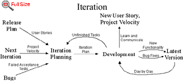

The project velocity (or
just velocity) is a measure of how fast work is getting done on your project. The load
factor was used for this purpose until recently. Project velocity seems to be an easier measurement to use.
If it helps, use load factor to create an initial estimate of project velocity, but then measure the velocity and
use that instead. The project velocity (or
just velocity) is a measure of how fast work is getting done on your project. The load
factor was used for this purpose until recently. Project velocity seems to be an easier measurement to use.
If it helps, use load factor to create an initial estimate of project velocity, but then measure the velocity and
use that instead.
To measure the project velocity
you simply count up how many user stories, or how many programming tasks were finished
during the iteration. Total up the estimates that these stories or tasks received.
It's just that simple.
During the release planning
meeting the project velocity in stories completed can be used to estimate how many stories will get done. During
the iteration planning meeting developers are allowed to sign up to do the
same number of estimated days of programming tasks equal to the project velocity measured in the previous iteration.
This simple mechanism allows
developers to recover and clean up after a difficult iteration. Your project velocity goes up by allowing developers
to ask the customers for another story when their work is completed early and no clean up tasks remain. |

Don't bother dividing the
project velocity by the length of the iteration or the number of developers. This number isn't any good to compare
two projects' productivity because each project team will have a different bias to estimating stories and tasks,
some estimate high, some estimate low. It doesn't matter in the long run. Tracking the total amount of work done
during each iteration is the key to keeping the project on an even keel.
A few ups and downs in project
velocity are expected. But you should use a release planning meeting to re-estimate and re-negotiate the release
plan if your project velocity changes dramatically for more than one iteration. Expect the project velocity
to change again when the system is put into production due to maintenance tasks. 
 |